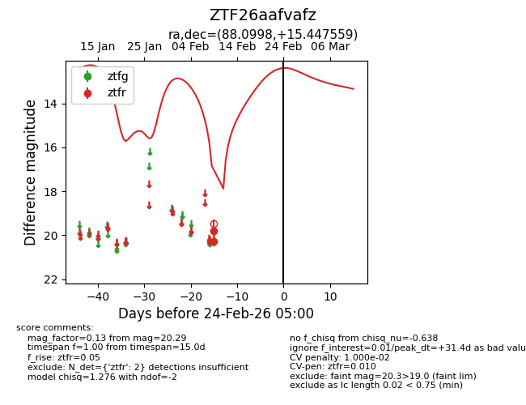
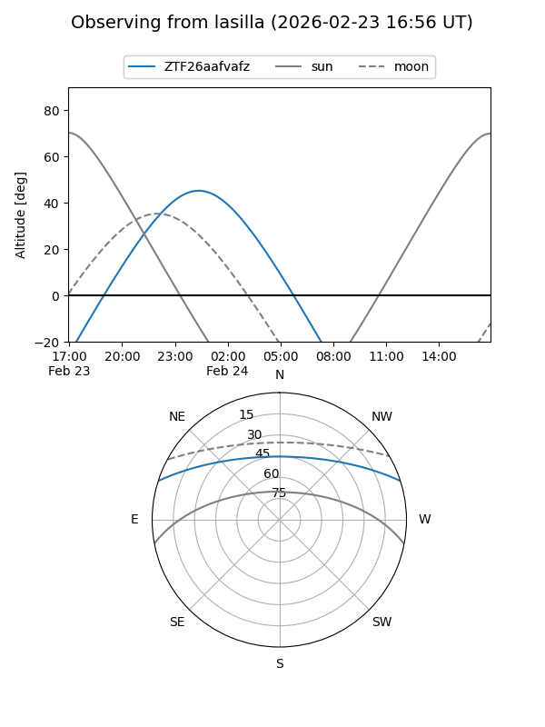
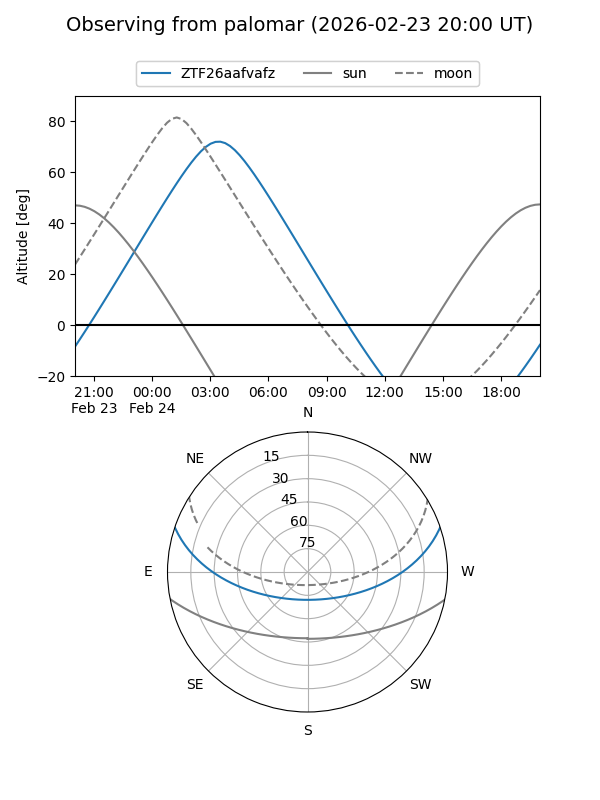

ZTF26aafvafz
Target ZTF26aafvafz at 2026-02-24 09:08
Aliases and brokers:
FINK: link
Lasair: link
ALeRCE: link
alt names
ZTF26aafvafz (ztf,fink_ztf)
Coordinates:
equatorial (ra, dec) = 88.0998,+15.44756
equatorial (HMS+DMS) = 05:52:23.96,+15:26:51.21
galactic (l, b) = (192.4028,-5.57177)
Flags:
likely cv
Photometry:
last ztfr=20.29
2 ztfr detections
Lightcurve

Visibility


Additional plots